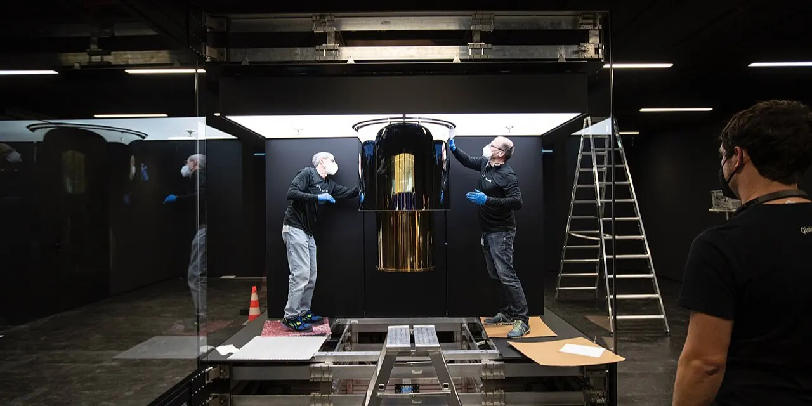

양자컴퓨팅 관련주를 찾을 때 가장 먼저 해야 할 일은 “양자”라는 이름이 붙은 종목을 모두 담는 것이 아니라, 실제로 양자컴퓨터, 양자보안, 양자 클라우드, 양자 장비 매출과 연결되는 회사를 분리하는 일입니다. QuantumScape는 배터리 회사이고, Quantum-Si는 단백질 분석 장비 회사이며, Quantum Corp는 데이터 저장장치 회사에 가깝습니다. 이름은 비슷하지만 투자 논리는 완전히 다릅니다.
미국 주식에서 실제 양자컴퓨팅 관련주로 볼 만한 축은 네 갈래입니다. 첫째는 아이온큐, 디 웨이브 퀀텀, 리게티 컴퓨팅, 퀀텀 컴퓨팅, 그리고 2026년 6월 나스닥에 상장한 Quantinuum처럼 양자 기술 자체를 사업의 중심에 둔 회사입니다. 둘째는 Arqit, SEALSQ처럼 양자컴퓨터 시대의 보안 위협을 파는 회사입니다. 셋째는 IBM, 알파벳, 마이크로소프트, 아마존처럼 클라우드와 연구 생태계를 장악한 플랫폼 회사입니다. 넷째는 키사이트, 폼팩터, 엔비디아처럼 테스트, 측정, 시뮬레이션, 반도체 인프라를 제공하는 회사입니다.
결론부터 말하면 순수 양자 성장주 안에서 가장 유망한 후보는 아이온큐입니다. 이유는 간단합니다. 아이온큐는 매출, 남은 수행의무, 현금 규모, 제품 범위가 네 순수 양자주 중 가장 앞서 있습니다. 다만 “가장 유망한 회사”와 “지금 가장 싸게 살 수 있는 주식”은 같은 말이 아닙니다. 양자컴퓨팅 주식은 아직 손실과 기대가 함께 큰 구간이므로, 주가는 기술력보다 계약 전환 속도와 현금 소진 속도에 더 냉정하게 반응할 수 있습니다.
전체 관련주는 네 묶음으로 나눠야 합니다

순수 양자주는 주가 민감도가 가장 큽니다. IONQ는 이온트랩 방식과 양자 네트워킹, 센싱, 보안을 함께 넓히고 있습니다. QBTS는 어닐링 방식에서 출발해 게이트 모델을 보강하며 기업 최적화 문제를 겨냥합니다. RGTI는 초전도 방식과 자체 Fab, 칩렛 확장 로드맵을 강조합니다. QUBT는 양자 광학과 통합 포토닉스, 보안·센싱·이미징 응용에 가까운 회사입니다. QNT는 Quantinuum 상장 이후 새로 들어온 순수 양자 대형 후보지만, 공개시장 실적 이력이 짧아 아직 분기별 검증이 더 필요합니다.
양자보안주는 양자컴퓨터가 빨리 상용화될수록 보안 체계를 바꿔야 한다는 공포를 파는 축입니다. ARQQ는 양자 안전 대칭키 합의 플랫폼을 내세우고, LAES는 반도체와 보안 칩 쪽에서 포스트 양자 보안을 이야기합니다. 이 축은 양자컴퓨터를 직접 만드는 회사가 아닙니다. 대신 “양자컴퓨터가 기존 암호를 흔들면 보안 예산이 어디로 갈까”라는 질문에 답합니다.
플랫폼주는 단기 주가가 양자만으로 움직이지 않습니다. IBM은 오래전부터 양자 로드맵과 클라우드 접근권을 제공해 왔고, 알파벳은 Google Quantum AI를 통해 오류 보정과 칩 연구를 밀고 있습니다. 마이크로소프트는 Azure Quantum과 자체 하드웨어 연구를 묶고, 아마존은 Braket을 통해 여러 양자 하드웨어 접근권을 클라우드 상품처럼 제공합니다. 이들은 양자컴퓨팅이 성공해도 전체 매출에서 양자 비중은 작지만, 실패해도 회사가 흔들릴 가능성은 낮습니다.
장비와 인프라주는 가장 덜 화려하지만 투자자가 놓치면 안 되는 축입니다. 키사이트는 양자 연구와 제어·측정 장비 수요와 연결되고, 폼팩터는 극저온 프로브와 반도체 테스트 인프라를 통해 양자 칩 연구와 닿아 있습니다. 엔비디아는 양자컴퓨터 자체보다 양자 회로 시뮬레이션과 고성능컴퓨팅 인프라 쪽에서 간접 노출을 갖습니다. 양자컴퓨팅 시장이 커질 때 순수 양자주만 오르는 것이 아니라, 실험 장비와 클라우드 계산 인프라에도 돈이 먼저 흐를 수 있습니다.
| 분류 | 대표 종목 | 투자자가 보는 질문 | 성격 |
|---|---|---|---|
| 순수 양자컴퓨팅 | QNT, IONQ, QBTS, RGTI, QUBT | 계약, 백로그, RPO, 장비 납품이 매출로 바뀌는가 | 고위험 고변동 |
| 양자보안 | ARQQ, LAES | 포스트 양자 보안 예산이 실제 매출로 잡히는가 | 보안 옵션 |
| 클라우드·플랫폼 | IBM, GOOGL, MSFT, AMZN | 연구 생태계와 클라우드 접근권을 장악하는가 | 방어적 간접 노출 |
| 장비·인프라 | KEYS, FORM, NVDA | 실험실과 데이터센터 지출이 반복되는가 | 공급망 노출 |
순수 양자주는 사업화 숫자로 다시 줄 세워야 합니다
관련 영상
양자컴퓨팅 관련주와 아이온큐·디웨이브·리게티 흐름을 설명하는 한국어 롱폼 영상
아이온큐의 2026년 1분기 발표에서 가장 중요한 숫자는 매출 6,470만 달러, RPO 4억7,000만 달러, 현금·투자자산 31억 달러입니다. 이 숫자는 “가능성”이 아니라 이미 계약과 자금력이 커지고 있다는 신호입니다. 아이온큐가 네 종목 중 1순위로 보이는 이유도 여기에 있습니다. 다만 조정 EBITDA 손실이 크고, SkyWater 인수·제조 통합 비용이 남아 있어 손실 축소가 같이 확인되어야 합니다.
디 웨이브의 2026년 1분기 발표는 매출보다 예약이 더 중요합니다. 매출은 290만 달러였지만 예약은 3,340만 달러였고, RPO는 4,240만 달러였습니다. 회사는 RPO 일부가 12개월 안에 매출로 인식될 수 있다고 설명했습니다. 즉 디 웨이브는 “지금 돈을 내는 고객이 있는가”라는 질문에서 흥미로운 후보입니다. 다만 예약이 매출과 매출총이익으로 바뀌지 않으면 기대는 쉽게 꺼질 수 있습니다.
리게티 컴퓨팅은 초전도 방식의 기술 베타가 큽니다. 2026년 1분기 매출은 440만 달러였고, 현금과 매도가능증권은 5억6,900만 달러였습니다. 108큐비트 Cepheus 시스템과 Novera QPU 판매는 분명한 기술 이벤트지만, 아직은 반복 매출이 작습니다. 리게티는 기술 발표에 가장 민감하게 움직일 수 있으나, 장기 후보가 되려면 클라우드 사용량과 QPU 반복 판매가 따라와야 합니다.
퀀텀 컴퓨팅은 2026년 1분기 매출 370만 달러, 현금·투자자산 14억 달러, 백로그 약 1,600만 달러를 발표했습니다. 현금은 강력합니다. 그러나 QUBT의 핵심은 “현금이 많다”가 아니라 “포토닉스 제품과 Fab 1이 실제 제품 매출을 만들 수 있는가”입니다. Luminar Semiconductor와 NuCrypt 인수는 선택지를 넓혔지만, 인수 통합은 늘 비용과 실행 리스크를 동반합니다.
Quantinuum은 2026년 6월 QNT 티커로 나스닥 상장을 시작했습니다. 2,800만 주를 주당 60달러에 공모했고, 상장 직후부터 순수 양자 대형 후보로 들어왔습니다. 다만 이제 막 공개시장 데이터가 쌓이기 시작한 종목입니다. 기술 신뢰도와 기존 고객 기반은 강점이지만, 상장 이후 분기 실적, 매출총이익률, 연구개발비, 현금 소진 속도가 확인되기 전까지는 IONQ와 같은 방식으로 바로 점수화하기 어렵습니다.
| 종목 | 주요 사업 | 현재 장점 | 가장 큰 리스크 | 사업화 점수 |
|---|---|---|---|---|
| IONQ | 이온트랩 양자컴퓨팅, 네트워킹, 센싱 | 매출·RPO·현금 규모가 가장 큽니다 | 손실과 제조 통합 비용입니다 | 상 |
| QBTS | 어닐링, 게이트 모델, QCaaS | 예약과 RPO가 빠르게 커졌습니다 | 예약의 매출 전환입니다 | 중상 |
| RGTI | 초전도 큐비트, 자체 Fab, 클라우드 접근 | 기술 로드맵과 현금이 있습니다 | 반복 매출 규모가 작습니다 | 중 |
| QUBT | 양자 광학, 포토닉스, 보안·센싱 응용 | 현금과 포토닉스 선택지가 큽니다 | 제품 매출과 인수 통합입니다 | 중 |
| QNT | 양자 하드웨어·소프트웨어 플랫폼 | 상장 직후 대형 순수 양자 후보입니다 | 공개시장 검증 기간이 짧습니다 | 보류 |
안정형 투자자는 IBM과 플랫폼 회사를 따로 봐야 합니다
양자컴퓨팅에 투자하고 싶지만 손실이 큰 순수 양자주 변동성이 부담스럽다면 IBM이 가장 현실적인 안정형 후보입니다. IBM은 양자컴퓨팅만으로 움직이는 회사가 아닙니다. Red Hat, 메인프레임, 컨설팅, 하이브리드 클라우드, 배당과 현금흐름이 더 큽니다. 그래서 양자컴퓨팅 성공 시 상승 민감도는 IONQ보다 낮지만, 실패 시 방어력은 훨씬 좋습니다. 양자컴퓨팅이 장기적으로 성장한다고 보되 단일 기술주 리스크를 줄이고 싶다면 IBM은 비교표에 반드시 들어가야 합니다.
알파벳은 Google Quantum AI를 통해 오류 보정과 칩 연구를 계속 밀고 있습니다. 그러나 GOOGL 주가의 핵심은 여전히 검색 광고, 유튜브, 클라우드, AI 인프라 투자 회수입니다. 양자컴퓨팅은 장기 옵션에 가깝습니다. 마이크로소프트도 Azure Quantum과 양자 연구를 운영하지만, 주가의 본체는 Azure, Office, Copilot, 기업용 소프트웨어입니다. 아마존의 Braket 역시 고객이 여러 양자 하드웨어에 접근하는 클라우드 서비스지만, AMZN 주가는 AWS와 리테일 마진이 더 크게 좌우합니다.
이 플랫폼 종목들의 장점은 양자컴퓨팅 시장을 기다릴 체력이 있다는 점입니다. 단점은 양자컴퓨팅이 대성공해도 전체 회사 가치에서 차지하는 비중이 작을 수 있다는 점입니다. 따라서 “양자컴퓨팅으로 10배를 노린다”면 플랫폼주는 답이 아닐 수 있습니다. 반대로 “양자컴퓨팅이 아직 너무 이른데도 이 분야를 놓치고 싶지 않다”면 플랫폼주가 더 맞습니다.
양자보안과 장비주는 테마 후반부가 아니라 초반부에도 돈을 법니다
Arqit은 양자컴퓨터가 기존 암호 체계를 흔들 수 있다는 문제를 정면으로 다룹니다. 이 회사의 핵심은 양자컴퓨터를 직접 만드는 것이 아니라, 양자 시대에도 안전한 키 합의와 보안 플랫폼을 제공하는 것입니다. 양자보안주는 양자컴퓨터가 완전히 상용화되기 전에도 정부, 국방, 통신, 금융권의 대비 예산이 생기면 먼저 움직일 수 있습니다. 다만 보안 플랫폼은 실제 고객 계약, 반복 매출, 인증과 표준 채택이 매우 중요합니다.
SEALSQ의 LAES도 포스트 양자 보안과 반도체 보안 칩 내러티브가 붙습니다. 하지만 LAES는 순수 양자컴퓨터 주식이 아닙니다. 투자자는 이 회사를 볼 때 “양자컴퓨터가 얼마나 빨리 나오는가”보다 “보안 칩과 인증 솔루션이 실제 주문과 매출로 바뀌는가”를 확인해야 합니다. 테마가 강할 때 이름 때문에 같이 움직일 수는 있지만, 장기 주가는 제품 매출이 결정합니다.
키사이트와 폼팩터는 양자컴퓨팅 장비·측정·테스트 인프라와 닿아 있습니다. 양자 연구실은 멋진 알고리즘만으로 돌아가지 않습니다. 극저온 환경, 신호 측정, 프로브, 반도체 테스트, 고성능 계산 인프라가 필요합니다. 이들은 순수 양자주처럼 주가가 크게 튀지 않을 수 있지만, 양자 연구 예산이 늘어날 때 실제 구매 주문이 먼저 생길 수 있는 회사들입니다. 양자컴퓨팅 산업의 장기 성장을 믿는다면 장비주를 단순 보조 종목으로만 보면 안 됩니다.
가장 유망한 한 종목은 아이온큐지만, 조건부입니다
순수 양자컴퓨팅 관련주 중 하나만 골라 “사업화 가능성이 가장 앞선 후보”를 정한다면 현재는 아이온큐입니다. 이유는 세 가지입니다. 첫째, 2026년 1분기 매출 규모가 순수 양자주 중 가장 큽니다. 둘째, RPO가 커서 향후 매출 전환을 확인할 재료가 있습니다. 셋째, 현금과 투자자산 규모가 커서 기술 로드맵과 인수 통합을 버틸 시간이 있습니다.
하지만 아이온큐를 가장 유망하다고 말할 때 반드시 붙여야 할 단서가 있습니다. 아이온큐는 이미 많은 기대를 받은 종목입니다. 시장이 기대하는 것은 단순한 매출 증가가 아니라, RPO가 실제 매출로 인식되고, 매출총이익률이 버티고, 조정 EBITDA 손실이 줄어드는 흐름입니다. 만약 이 세 가지가 동시에 확인되지 않으면 “가장 앞선 회사”라는 말이 곧바로 “가장 좋은 주식”으로 이어지지 않습니다.
두 번째 후보는 디 웨이브입니다. 디 웨이브는 기술 방식이 다르지만, 기업 최적화 문제와 예약 증가라는 관점에서는 매우 흥미롭습니다. 특히 예약과 RPO가 실제 매출로 전환되는 속도가 확인되면 단기 사업화 점수는 빠르게 올라갈 수 있습니다. 다만 현재 매출 규모가 작고, Quantum Circuits 인수 이후 비용 구조를 봐야 하므로 공격형 후보에 가깝습니다.
리게티와 퀀텀 컴퓨팅은 “증명되면 크게 움직일 수 있는 후보”입니다. 리게티는 초전도 방식과 자체 Fab가 매력적이지만 반복 매출이 필요합니다. 퀀텀 컴퓨팅은 현금이 크고 포토닉스 축이 독특하지만, 제품 매출과 인수 통합을 보여줘야 합니다. 두 회사 모두 양자컴퓨팅 테마가 강할 때 빠르게 움직일 수 있지만, 장기 보유 후보가 되려면 다음 실적에서 고객 사용량, 매출총이익, 현금 소진 속도를 동시에 보여줘야 합니다.
다음 실적에서 이 순서로 확인하면 됩니다
첫 번째 확인 순서는 매출이 아니라 계약의 질입니다. 아이온큐는 RPO가 어느 기간에 매출로 인식되는지, 디 웨이브는 예약이 실제 매출로 넘어오는지, 리게티는 클라우드 사용량과 QPU 판매가 반복되는지, 퀀텀 컴퓨팅은 백로그가 제품 매출로 바뀌는지를 봐야 합니다. 양자컴퓨팅은 아직 초기 시장이라 매출 숫자 하나보다 계약이 반복되는지가 더 중요합니다.
두 번째는 현금 소진 속도입니다. 순수 양자주는 연구개발, 인력, 설비, 인수 통합 비용이 큽니다. 현금이 많아도 분기 손실이 빠르게 커지면 다음 자본조달과 희석 위험이 따라옵니다. 아이온큐와 QUBT는 현금 규모가 크지만 그 돈이 시간만 사는지, 제품 경쟁력을 높이는지 구분해야 합니다. RGTI와 QBTS도 현금이 있지만 손실과 매출 전환의 균형이 중요합니다.
세 번째는 고객의 종류입니다. 대학·연구기관 고객만 많으면 기술 검증에는 도움이 되지만 반복 상업 매출이 약할 수 있습니다. 정부·국방 고객은 계약 규모가 커질 수 있지만 예산과 승인 일정에 묶일 수 있습니다. 민간 기업 고객은 반복성이 중요합니다. 누가 돈을 내는지, 왜 다시 돈을 내는지, 그 계약이 유지보수와 클라우드 사용량으로 이어지는지를 확인해야 합니다.
마지막으로 테마 과열을 별도로 봐야 합니다. 양자컴퓨팅은 장기적으로 큰 시장이 될 수 있지만, 주가는 기대가 먼저 움직입니다. 따라서 가장 유망한 종목을 고를 때도 매수 결론을 서두르면 안 됩니다. 현재 사업화 점수로는 아이온큐가 앞서고, 단기 계약 전환 후보로는 디 웨이브가 흥미롭고, 기술 베타는 리게티와 퀀텀 컴퓨팅이 큽니다. 안정형 노출은 IBM 같은 플랫폼주가 더 낫습니다. 독자가 해야 할 일은 이 네 가지 성격을 섞지 않고, 자기 투자 기간과 변동성 감내 수준에 맞는 후보를 고르는 것입니다.